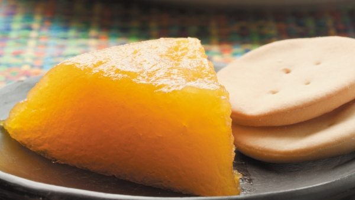

Tradicional y popular en toda la geografía venezolana

La muy conocida y exquisita jalea de mango, es un dulce muy popular y tradicional en toda la geografía venezolana.
La jalea es hecha con mangos verdes y en otras ocasiones con mangos pintones. Su textura de manjar es brillante y de color amarillo aunado a sus sabores encontrados entre ácido y dulce lo hacen muy atractivo y delicioso a los ojos y al paladar.
Es receta la preparan en cada región de Venezuela y cada quien le añade su toque particular, tal como: limón, vainilla, clavos de especia o papelón en lugar de azúcar.
Los mangos son ricos en yodo, vitamina c y trementina. Los árboles son grandes y frondosos, y producen grandes cantidades de sus frutos, además ofrecen una sombra fresca y espléndida para el descanso.
A continuación te muestro de que zona de Venezuela es típica esta receta:
Ahora si! Manos a la obra
Cantidad: Para 12 comesales
Preparación: 10 minutos
Cocción: 35 Minutos
Dificultad: Baja
Ingredientes para preparar Jalea de Mango
15 mangos verdes
Azúcar según la medida (o su equivalente en papelón)
cucharadita de jugo de limón
Preparación de la Jalea de Mango
Primero se lavan los mangos y se ponen a cocinar a fuego medio y tapados con suficiente agua como para cubrirlos, por aproximadamente de 30 a 45 minutos.
Una vez que la concha del mango se abra por si sola y se sienta la pulpa blanda, se retira la olla del fuego, se escurre y se deja enfriar.
Luego que los mangos estén fríos se le quitan las conchas y se le extrae la pulpa con la ayuda de un rallador grande o de un colador, preferiblemente de alambre, para extraer las hilachas.
Colocar la pulpa en una olla junto con el azúcar y la cucharadita de limón. La cantidad de azúcar es proporcional a la cantidad de pulpa, es decir, si tiene 700 gramos de pulpa debes agregarle 700 gramos de azúcar.
Colocar la olla con la mezcla a cocinar a fuego medio-alto revolviendo continuamente con una cuchara de madera por aproximadamente 20 a 30 minutos. Al levantar la mezcla con la cuchara debe romper y caer de un solo golpe y no debe chorrear. La mezcla se debe separar con mucha facilidad del fondo y de las paredes de la olla.
Retirar del fuego y verter inmediatamente en un molde de vidrio refractario, previamente humedecido con agua, nivela la superficie y le das unos golpecitos contra el mesón para que no queden burbujas, hasta que cuaje y se pueda cortar en raciones.
Al servir
Preferiblemente servir frio de nevera.
Y si eres de los que prefieren los videos, aca te dejo uno del canal "Recetas Venezolanas"